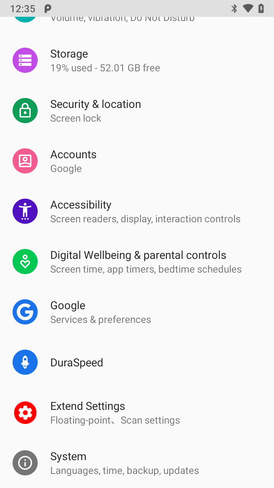
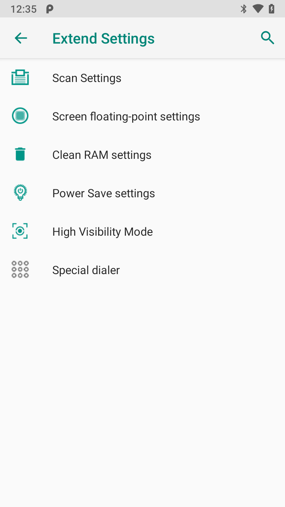
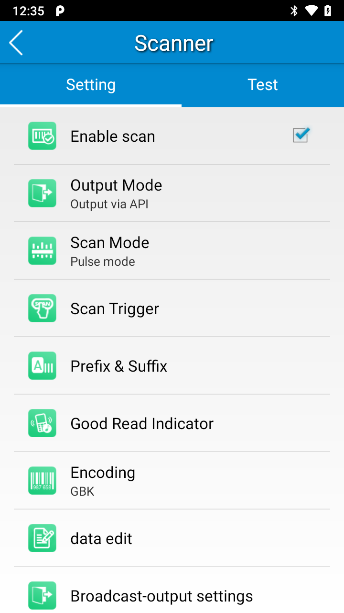
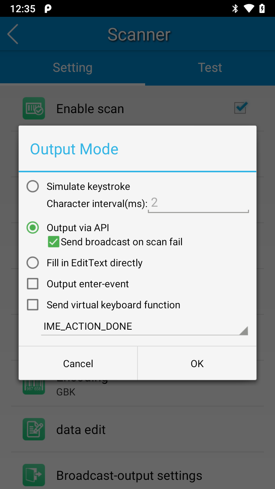

Newland HHT Integration Tutorial
Open Settings select Extended Settings
Inside Settings > Extended Settings select Scan Settings
Inside Settings > Extended Settings > Scan Settings
Enable scan
Change Output Mode to Output Mode Output via API
Change Broadcast-output settings to below
Broadcast action : com.edgewise.handheld.ACTION
Result 1 extra : com.symbol.datawedge.data_string